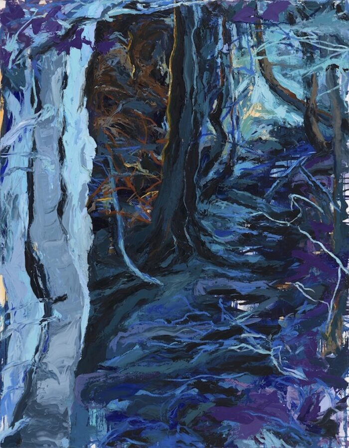

Sheri Rush: The Dwelling Place of Spirits
Sheri Rush
The Dwelling Place of Spirits
Sheri Rush is a Chicago-based painter and sculptor whose work responds to the current world by considering the intersection of identity, landscape, and recollection. Her work reflects on the current danger to the forest ecosystem while exploring the spiritual power of the natural world. Rush holds a BFA from Texas Christian University and an MFA from the University of Chicago. She has lived and worked in Chicago since completing my graduate studies.
Rush’s work has been exhibited at Art Cake NY, McCormick Gallery, the University of Wisconsin-Madison, Rockford Art Museum, Freeport Art Museum, Ralph Arnold Gallery, The Art Center Highland Park, Arc Gallery, Hofheimer Gallery, Mu Gallery, and James Baird Gallery in Newfoundland. Solo exhibitions include the Hyde Park Art Center, Evanston Art Center, and Epiphany Center for the Arts.